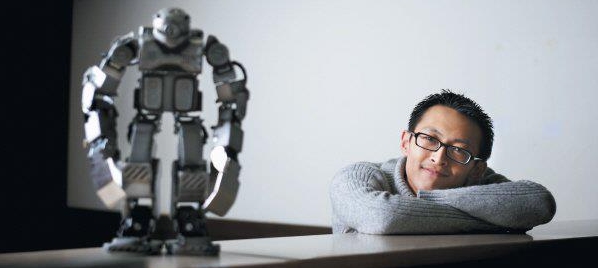
Robot is ...
About Me
|
Yoonseok Pyo JSPS Research Fellow Major of Advanced Information Technology Laboratory for Intelligent Robots & Vision System Graduate School of Information Science and Electrical Engineering Kyushu University |
Curriculum Vitae
| 2013-04 ~ | Graduate School of Information Science and Electrical Engineering, Kyushu University, Japan | Ph.D Student |
| 2011-04 ~ 2013-03 | Graduate School of Information Science and Electrical Engineering, Kyushu University, Japan | Master Student |
| 2010-04 ~ 2011-03 | Department of Advanced Information Technology, Kyushu University, Japan | Research Student |
| 2009-05 ~ 2010-02 | Korea Institute of Science and Technology (KIST) | Researcher |
| 2002-03 ~ 2009-02 | College of Electronics & Informaion Engineering, Kwangwoon University, Korea | Bachelor of Engineering (B.E.) |
Award
| 2012-12 | Excellent Presentation Award of The SI2012 | SI2012 Committee |
| 2009-12 | Best Poster Award | KIST Chief Award |
| 2009-05 | Japan 15th ROBO-ONE | Chairperson Award,1st |
| 2008-10 | International Robot Contest (IRC2008) | Korea President Award,1st |
| 2005-11 | Ubiquitous Robot Contest(URC2005) | Korea Robotics Society Chief Award,1st |
| 2005-10 | Robot Universiade Festival (RUF2005) | MCIE Minister Award,1st |
| 2005-10 | ROBOTPIAD 2005 | MCIE Minister Award,1st |
Intern & Certificate
| 2008-07 ~ 2008-08 | Certificate of Campus Internship Program | Internship Course | National Instruments Korea |
| 2007-02 ~ 2007-02 | The seven habits of highly effective students | Leadership Course | Korea Leadership Center |
| 2005-02 ~ 2005-08 | Intern | Internship Course | ROBOTIS |
Scholarship
| 2012-04 ~ 2014-03 | Rotary YONEYAMA Memorial Scholarship Foundation | 1,680,000Yen a year | Rotary YONEYAMA Memorial Scholarship Foundation |
| 2008-03 ~ 2009-02 | Scholarships of robot | Full tuition | Kwangwoon University |
| 2007-03 ~ 2008-02 | Scholarships of robot | Full tuition | Kwangwoon University |
Activities of Community Group
| 2013-03 ~ | Open Robot Technology Community | Manager of Community |
| 2006-11 ~ 2009-05 | Kwangwoon Robot Sport Game Team(ROBIT) | Captain 2 years, Development of humanoid robot and take part in a robot competition |
| 2002-03 ~ 2009-02 | Robot Laboratory(ROLAB) | Captain 1 year, Robot Study Group activities |
Research
Research（M.S.:2011~2012）
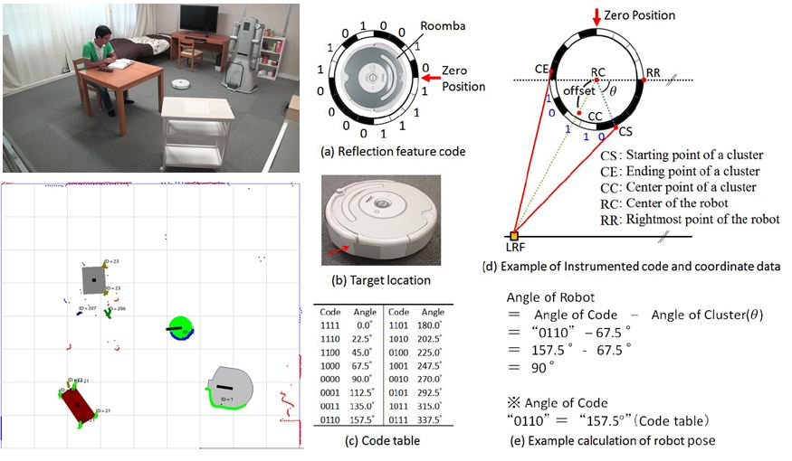We propose a method for classification of objects on the floor using distance and reflectance acquired by the laser range finder (LRF) installed in the room and a strip of mirror attached to a side wall close to a floor. In addition, we propose a method for measurement of robot pose using the tag encodes reflection characteristics.
Research（B.E.:2002~2009）
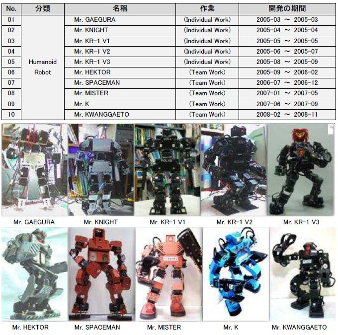Development of small humanoid robots began in 2005. It was all of my college life. It was one of my dreams. Initially, my humanoid robot is very low level but, in Unit 1 to Unit 10, while production techniques and more general development process of the robot was able to learn. In addition, a variety of development was an opportunity to learn skills.
◆ Part of development
- Machine Design: CAD-Tool (Inventor) using 2D with 3D design and CNC machining equipment
- Circuit Design: PCB
- Tool (PADS) using PCB design
- Firmware: ATmega128 MCU firmware, motor control, multiple communication, dynamic walking algorithm and acceleration / deceleration
- Software: LabVIEW program developed using the sensor measurements
- Sensors: use of accelerometers and angular rate sensors, automatic defense system development
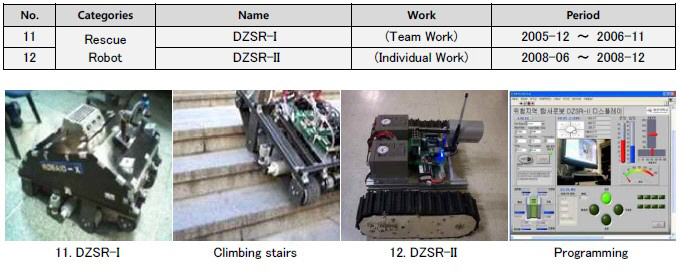
"DZSR - I" and "DZSR - II" is "Dangerous Zone Searching Robot". The wheel consists of Caterpillar. Robots on the road, off-road, ramp, stairs, etc., designed to be driven smoothly. In addition, cameras, location sensors, environmental sensors and remote information is available in the job. And the robot to these activities, designed to identify dangerous situations. And then I developed "DZSR - II" of the old heavy and bulky to address the shortcomings were smaller. (65Kg → 11Kg)
◆ Part of development
- Circuit design: making motor drive circuit and multilateral communication, wireless communication circuits
- Firmware: ATmega128 MCU and DSP2406 MCU firmware, motor control, multi-communication
- Software: the location (distance, slope), and environmental information(temperature, humidity, illumination, gas) development of monitoring program
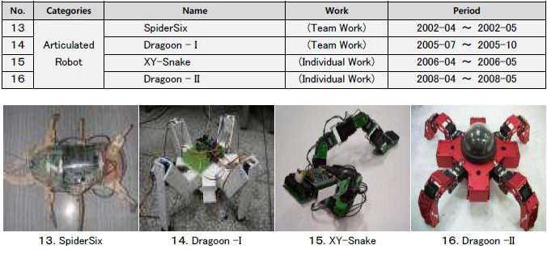
◆ Part of development
- Articulated motor control, various articulated mechanical design
- 4-foot, 6-foot, 10 pedestrians and driving joint development of algorithms
- 8051, ATmega8535, ATmega128, ARM7TDMI controller and several
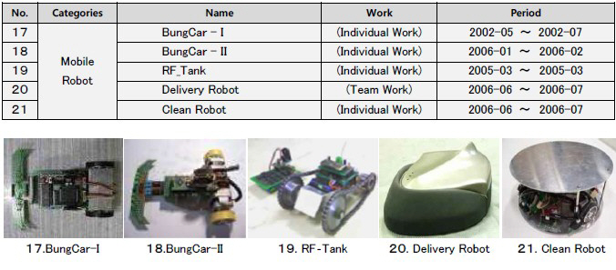
◆ Part of development
- Step, DC motor control, autonomous action RF transceiver and a bluetooth communications transmission equipment, line tracking, remote control, movie props for the delivery robot, cleaning robot developed
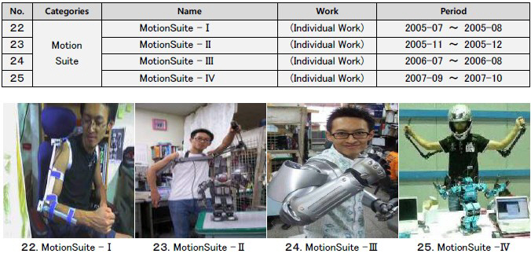
"MotionSuite I ~ IV"’s the purpose of the project is the effectiveness of the humanoid motion system. This works as an input to accept a person's actions that this robot is a real-time input receiving equipment. This was to increase the effectiveness of the humanoid robot. "MotionSuite - I" 8 bit positions of the five joints were able to transmit information over the wire. However, "MotionSuite - IV" the 10 joints of 10-bit position and orientation information from one robot to the real-time wireless transmission was possible.
◆ Part of development
- gathering information, the wireless package, introduction of calibration technique, using a geomagnetic direction sensor information delivery.
- Use the equipment utilized in the robot motion was transmitted, and motion capture.
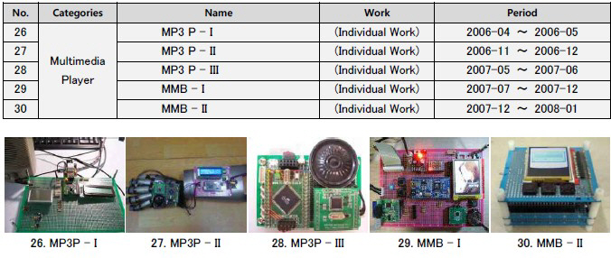
◆ part of development
- Resistance by using only a voice output device to start up an MP3 player with MP3 decoder chip development.
- ARM7TDMI and the MP3 decoder, TFTLCD, multimedia equipment development using the touch panel.
- Using the robotic equipment used in audio systems.
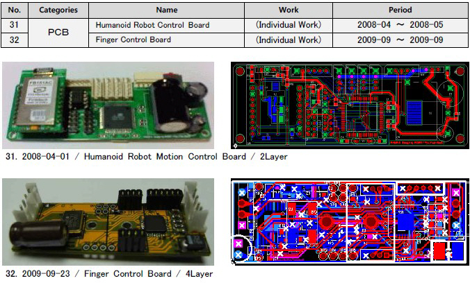
◆ Part of development
- Circuit design : program developed using PADS and OrCAD.
Publications
Books (1)
- Application White Paper of Raspberry Pi
Yoonseok Pyo, Jaesang Lee
BJ Public, ISBN: 9788994774497, Online Bookstore, pp.1-332, 2013. (in Korean)
Journals (2)
- Floor Sensing System Using Laser Reflectivity for Localizing Everyday Objects and Robot
Yoonseok Pyo, Tsutomu Hasegawa, Tokuo Tsuji, Ryo Kurazume and Ken'ichi Morooka
Sensors 2014, Vol.14, No.4, pp.7524-7540, 2014
- Measurement of Moving Objects and Estimation of Human Behavior Using Floor Sensing System in Daily Life Environment
Tsutomu Hasegawa, Yoonseok Pyo, Masahide Tanaka, Tokuo Tsuji, Ken’ichi Morooka and Ryo Kurazume
Journal of the Robotics Society of Japan, Vol.31, No.8, pp.769-779, 2013 (in Japanese)
International Conference (3)
- Measurement and Estimation of Indoor Human Behavior of Everyday Life Based on Floor Sensing with Minimal Invasion of Privacy
Yoonseok Pyo, Tsutomu Hasegawa, Masahide Tanaka, Tokuo Tsuji, Ken’ichi Morooka and Ryo Kurazume
Proceeding of the IEEE International Conference on Robotics and Biomimetics (ROBIO), pp. 2170-2176, 2013
- The Intelligent Room for Elderly Care
Oscar Martinez Mozos, Tokuo Tsuji, Hyunuk Chae, Shunya Kuwahata, Yoonseok Pyo, Tsutomu Hasegawa Ken'ichi Morooka, and Ryo Kurazume
5th International Work-conference on the Interplay between Natural and Artificial Computation, pp.103-112, 2013
- High-precision three-dimensional laser measurement system by cooperative multiple mobile robots
Yongjin Jeong, Yoonseok Pyo, Yumi Iwashita, Tsutomu Hasegawa and Ryo Kurazume
2012 IEEE/SICE International Symposium on System Integration (SII2012), pp.198-205, 2012
Domestic Conference (13)
- 分散センサを用いた室内状況推定に基づくサービス自動実行アーキテクチャ
ピョユンソク, 永田晃洋, 中島洸平, 桑畑舜也, 辻徳生, 諸岡健一, 倉爪亮, 長谷川勉
日本機械学会ロボティクスメカトロニクス講演会2014, 1P2-H02, 2014.05
- 爪を有する多指ハンドの把持計画
馬場 恒星, 辻 徳生, 表 允晳, 倉爪 亮, 諸岡 健一, 長谷川 勉, 原 田研介
日本機械学会ロボティクスメカトロニクス講演会2014, 3P2-R01, 2014.05
- 情報構造化アーキテクチャの提案とサービスロボットのオンライン動作計画の実現
表允晳, 辻徳生, 橋口優香, 永田晃洋, 中島洸平, 倉爪亮, 長谷川勉, 諸岡健一
第19回ロボティクスシンポジア講演予稿集, 6D2, pp.624-630, 2014.3
- アクティブRFIDタグと床上レーザレンジファインダを用いた複数人物の追跡
日下和也, 表允晳, 長谷川勉, 辻徳生, 倉爪亮, 諸岡健一
第14回 計測自動制御学会 システムインテグレーション部門講演会, 2013.12
- 生活支援のための環境分散センサ情報統合アーキテクチャ
永田晃洋, 長谷川勉, 表允晳, 辻徳生, 諸岡健一, 倉爪亮
第31回日本ロボット学会学術講演会, 2013.09
- パーソナル清掃ロボットによる室内落下日用品の収集
橋口優香, 長谷川勉, 表允晳, 辻徳生, 諸岡健一, 倉爪 亮
日本機械学会ロボティクスメカトロニクス講演会2013, 2013.05
- 多指ハンドを用いた関節角の位置制御に基づく誤差に頑健な物体把持
馬場恒星, 辻徳生, 河村晃宏, 表允晳, 田原健二, 原田研介, 長谷川勉, 倉爪亮
日本機械学会ロボティクスメカトロニクス講演会2013, 2013.05
- 床上センシングシステムと室内生活行動モデルにもとづく居住者の行動推定
長谷川勉, 田中真英, 表允晳, 辻徳生, 諸岡健一, 倉爪亮
第18回ロボティクスシンポジア, 3D2, pp.330-336, 2013.03
- レーザレンジファインダの反射強度を利用した物体及びロボットの位置計測
表允晳, 田中真英, 長谷川勉, 辻徳生, 諸岡健一, 倉爪亮
第13回計測自動制御学会システムインテグレーション部門講演会, 1H3-1, pp.587-591, 2012.12
- レーザレンジファインダを用いた床上センシングによる室内生活行動の計測
田中真英, 表允晳, 辻徳生, 長谷川勉, 諸岡健一, 倉爪亮
第13回計測自動制御学会システムインテグレーション部門講演会, 1H3-2, pp.592-595, 2012.12
- クラウドTMS: ロボットタウンマネジメントのためのスケーラブルな分散処理システム
辻徳生, 表允晳, 曾昀, 永田晃洋, 長谷川勉, 倉爪亮, 諸岡健一, 村上剛司
第13回計測自動制御学会システムインテグレーション部門講演会, 1H4-7, pp.633-636, 2012.12
- レーザレンジファインダによる反射強度と位置計測を用いた床上センシングシステム
表允皙, 長谷川勉, 曾昀, 辻徳生, 諸岡健一, 倉爪亮
第30回日本ロボット学会学術講演会, 2H2-2, 2012.09
- ジェスチャによる移動ロボットへの動作目標指示と誤差修正
表允皙, 長谷川勉, 辻徳生, 諸岡健一, 倉爪亮
第29回日本ロボット学会学術講演会, 3O1-7, 2011.09
Workshops (1)
- Informationally Structured Environment for Elderly Care House
Yoonseok Pyo, Tokuo Tsuji, Shunya Kuwahata, Akihiro Nagata, Tsutomu Hasegawa, Ken’ichi Morooka, and Ryo Kurazume
Proc. The 9th Joint Workshop on Machine Perception and Robotics(MPR2013), K-O-02, 2013.10
Awards
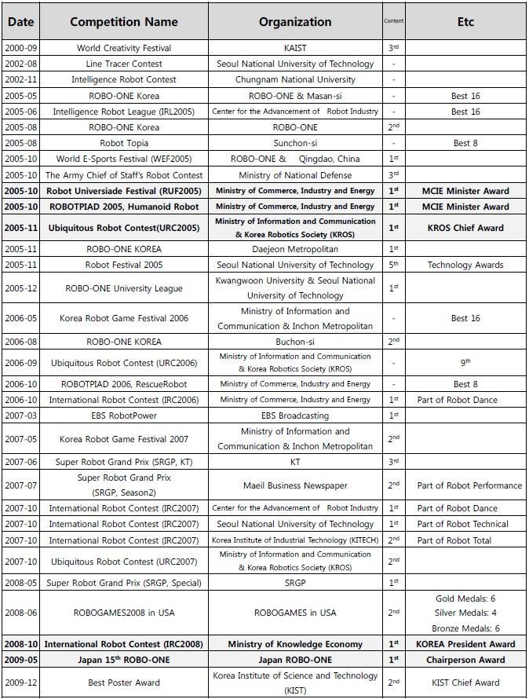
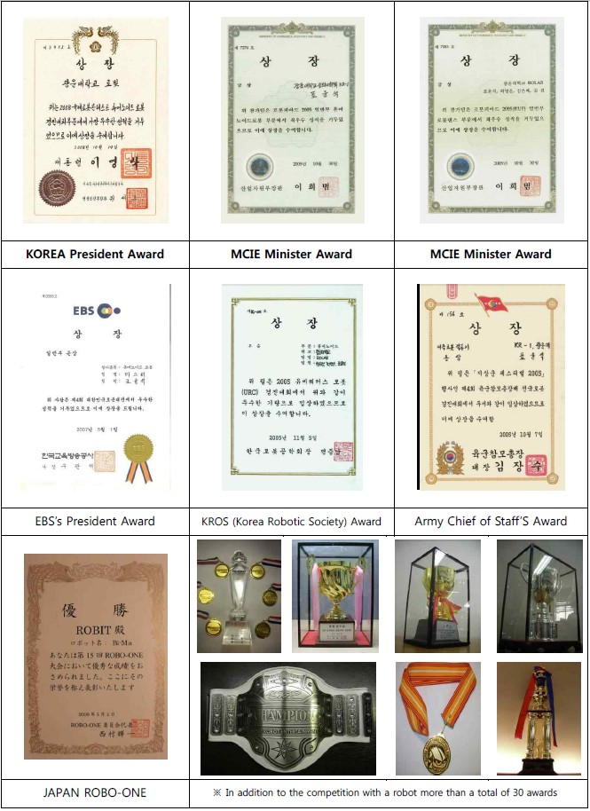
Media Activity
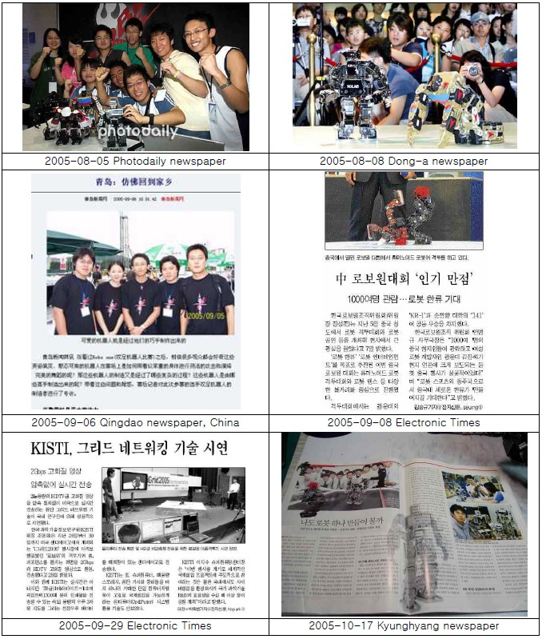
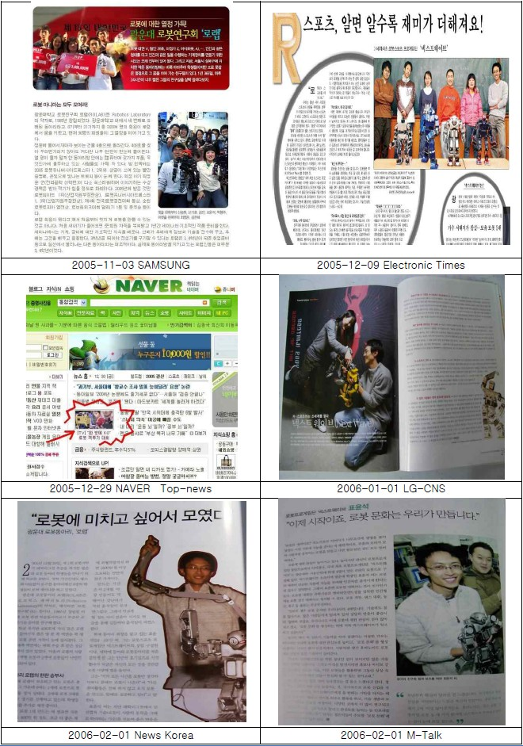
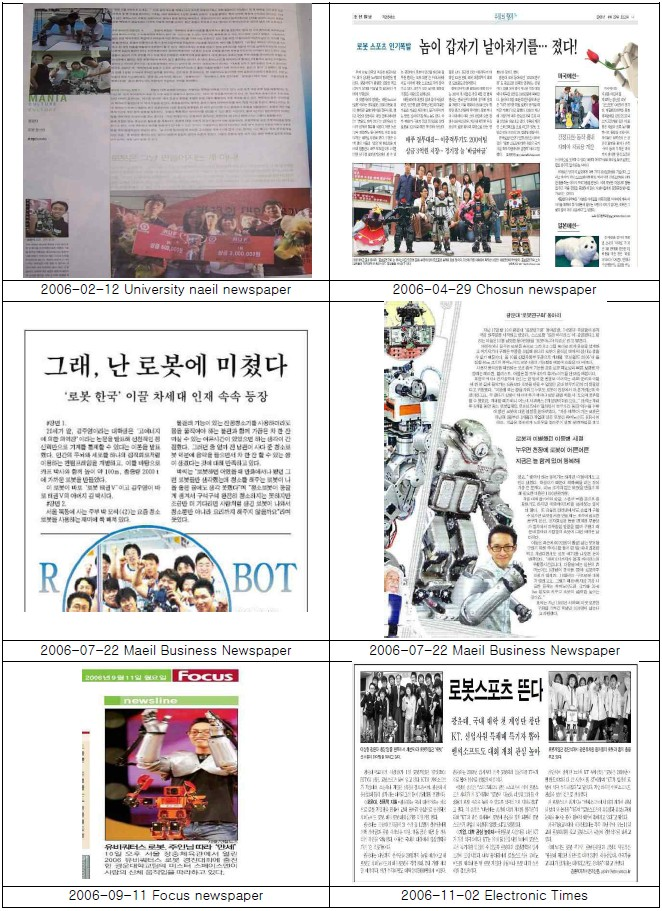
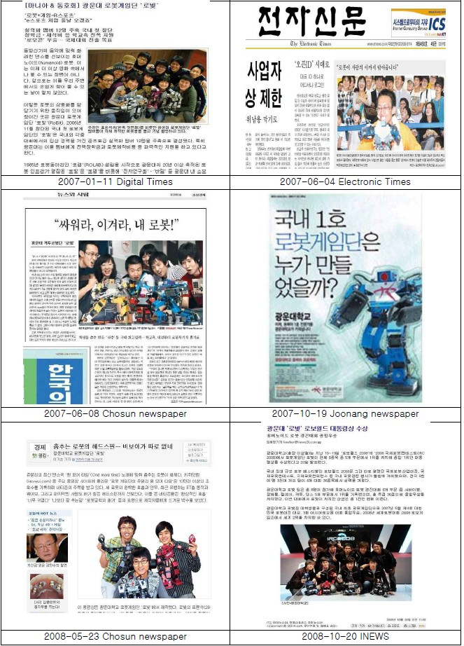
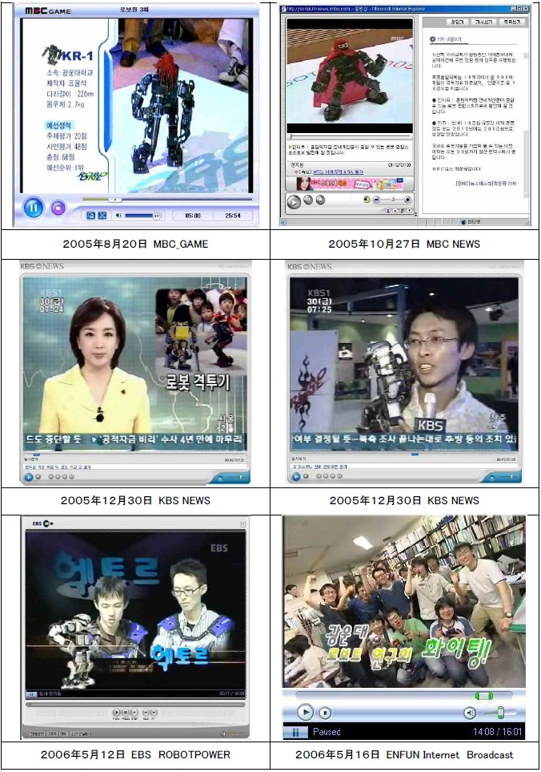
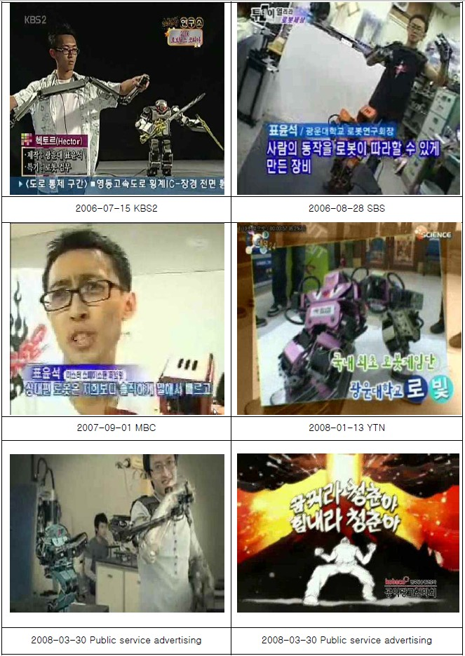
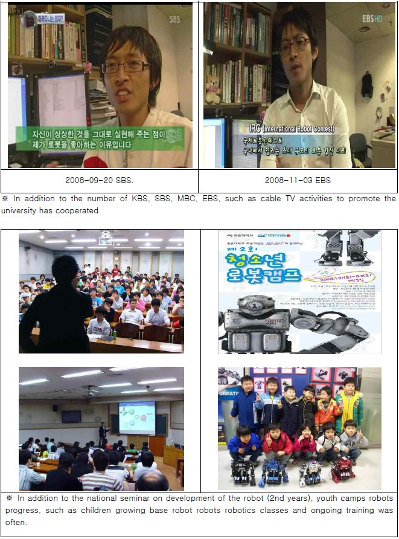
Contact
| Name : |
Yoonseok Pyo / 表 允晳 / ピョ ユンソク / 표 윤석 |
| Job : |
JSPS Research Fellow Major of Advanced Information Technology Laboratory for Intelligent Robots & Vision System Graduate School of Information Science and Electrical Engineering Kyushu University #928, Building West-2, 744 Motooka, Nishi-ku, Fukuoka, 819-0395, Japan |
| Nationality : |
Republic of Korea |
| Location : |
Fukuoka in Japan |
| Tel : |
+81-092-802-3598 |
| Personal Homepage : | http://www.robotpilot.net/ |
| Community Homepage : | http://www.oroca.org/ |
| Blog : |
http://blog.naver.com/passionvirus/ |
| E-Mail : |
|
| E-Mail : |
|
| Facebook : |
|
| Twitter : |